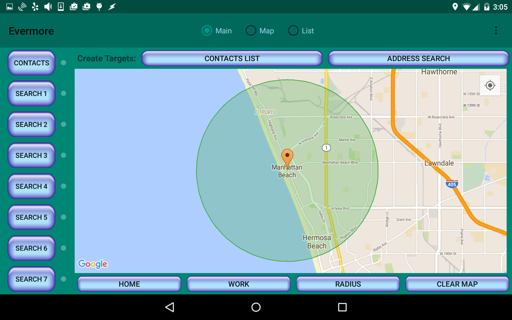

Here we are!
You can change the search radius size using Settings under the overflow menu (three dots) in the upper right corner, but this current radius of two miles seems fine.
I'll click on the Contacts button in the upper left to see whom I know in the area.